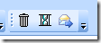

|
|
Archive for the ‘Tools’ Category
Monday, July 12th, 2010
I’m a practitioner of Merlin Mann’s Inbox Zero. The basic idea is that you avoid building up psychic weight by touching email as few times as possible. For each message you must:
- Do it
- Defer it
- Delegate it
- Delete it
 I have created an Outlook toolbar with these actions. Delete comes first because it is by far the most frequent response. Defer comes next, but is rarely used. Delegate is last to remind me not to become part of the problem. There are only three buttons because after I do it, I delete it.
Part of the freedom of inbox zero comes from allowing yourself to delete messages. You can only truly do this if you know that the information is not irrevocably lost. For that reason, my delete button is not the standard Outlook delete. It just moves the message to an “Archive” folder. Not a categorized, taxonomized, organized folder. Just one big archive that I can search if necessary. I have to search it about twice a month, and I’ve never had trouble finding what I needed.
I’ve written Outlook macros for two of these buttons. They just mark the current message as read and move them to the correct folder: “Archive” for delete, and “Open” for defer.
Function GetFolder(ByVal folderPath As String) As Outlook.Folder
Dim TestFolder As Outlook.Folder
Dim FoldersArray As Variant
Dim i As Integer
On Error GoTo GetFolder_Error
If Left(folderPath, 2) = "\\" Then
folderPath = Right(folderPath, Len(folderPath) - 2)
End If
'Convert folderpath to array
FoldersArray = Split(folderPath, "\")
Set TestFolder = Application.Session.Folders.Item(FoldersArray(0))
If Not TestFolder Is Nothing Then
For i = 1 To UBound(FoldersArray, 1)
Dim SubFolders As Outlook.Folders
Set SubFolders = TestFolder.Folders
Set TestFolder = SubFolders.Item(FoldersArray(i))
If TestFolder Is Nothing Then
Set GetFolder = Nothing
End If
Next
End If
'Return the TestFolder
Set GetFolder = TestFolder
Exit Function
GetFolder_Error:
Set GetFolder = Nothing
Exit Function
End Function
Sub Archive()
MarkReadAndMove ("\\Mailbox - Perry, Michael\Inbox\Archive")
End Sub
Sub Defer()
MarkReadAndMove ("\\Mailbox - Perry, Michael\Inbox\Open")
End Sub
Sub MarkReadAndMove(ByVal folderPath As String)
Dim selectedItem As Object
Dim archiveFolder As Outlook.Folder
Set selectedItem = Application.ActiveExplorer.Selection.Item(1)
Set archiveFolder = GetFolder(folderPath)
selectedItem.UnRead = False
selectedItem.Move archiveFolder
End Sub
Change the names as appropriate. I hope you find this as useful as I do.
Posted in Tools | No Comments »
Wednesday, December 31st, 2008
When approaching a new body of code, I like to have a map. This helps me see where to start looking, what avenues to ignore for now, and why the previous authors made the decisions they did.
Accurate documentation is never available. It's just too costly to maintain. I think we've finally stopped beating the "not enough documentation" drum. Now we turn to the code itself.
For a quick first glance at a Visual Studio solution, I run this handy macro.
Imports System
Imports EnvDTE
Imports EnvDTE80
Imports EnvDTE90
Imports System.Diagnostics
Imports VSLangProj
Imports System.IO
Public Module Diagram
Sub ProjectDependency()
Dim vsProject As VSProject
Dim file As Integer
Dim writer As New StreamWriter(DTE.Solution.FileName & ".dot")
writer.WriteLine("digraph """ & DTE.Solution.FullName & """ {")
writer.WriteLine(" rankdir=LR")
For Each project As Project In DTE.Solution.Projects
vsProject = TryCast(project.Object, VSProject)
If Not vsProject Is Nothing Then
For Each reference As Reference In vsProject.References
If Not reference.SourceProject Is Nothing Then
writer.WriteLine(" """ & project.Name & """->""" & reference.SourceProject.Name & """")
End If
Next
End If
Next
writer.WriteLine("}")
writer.Dispose()
End Sub
End Module
This generates a ".dot" file in the solution's folder. Run this through GraphViz to generate a graphical dependency map of the projects in the solution.
Then I start at the left side of the graph, which is where the entry points end up. I work my way down through the layers in a more-or-less breadth-first search of the project space. Tightly coupled project groups end up looking messy, and loosely coupled project groups end up looking neat.
Once I've oriented myself with this coarse map, I'll get more fine grained with a tool like NDepend. But this is a great first step.
Posted in Tools | 12 Comments »
Friday, October 26th, 2007
When companies do business on a regular basis, they can save money and expedite the process by integrating their enterprise systems. Back in the 80's and 90's, we used to call this SCM or B2B.
The demand for business integration has grown to the point that vendors have created platforms for these solutions. This kind of platform is called an Enterprise Service Bus (ESB). Three of the top ESB offerings are:
All of these solutions are designed for heterogeneous environments in which services are exposed to clients of varying needs, and consumed from vendors of varying capabilities. I won't go into the differences in implementation, or try to recommend one over another. I'll just describe the space.
The ESB toolset
These solutions begin with a palette of transports, including SOAP over HTTP, email, FTP, and database polling. These transports satisfy the needs of various clients – both internal and external – who consume services according to their own preferences.
These solutions then provide a canvas for mediation and transformation. Mediation is the process of determining, based on the content of the incoming message, how a message should be routed. Transformation reformats the message for its intended target. This canvas is usually presented as a graphical workflow.
Finally, the message terminates with a consumer chosen from another palette. Standard terminals include Java JAR file, web service, and stored procedure. The message terminal may be either an internal or external service.
Network topology
ESB containers are deployed throughout the data center to handle and route messages. Only the components required by each server are deployed to that server. Messages are passed hand-to-hand, mediated and transformed along the way.
Microsoft puts BizTalk and WCF into the ESB space. However, as Dave Chappell then of Sonic Software points out, BizTalk does not have quite the topological flexibility of the other ESB solutions. A hub-and-spoke configuration does not scale as well as a bus configuration, but clustering can help ease some of the stress.
All of the evaluated ESBs are based on Java. No serious contender could be found in the Microsoft space. All include some degree of developer support via Eclipse plugins. Although none is designed to invoke .NET assemblies directly, they can all be used to call web services implemented in .NET, with the usual interoperability caveats.
The goal of an ESB is rapid integration with business partners. The palette of transports and terminals makes it possible to interoperate with partners of varying capabilities. The graphical mediation and transformation interfaces make it easy to change business rules on-the-fly without requiring development resources. An ESB is overkill for many enterprise problems, but when you need it, you need it.
Posted in SaaS, Tools | No Comments »
Thursday, October 11th, 2007
Microsoft just pushed some updates to all of us Windows users. And just like every time before, they put the Internet Explorer icon back into my Quick Launch bar. I don't use IE, and I fight to keep my task bar clean. My Quick Launch bar is only for the apps that I use every day.
I found two solutions to this problem at Channel 9. The first seems a bit draconian -- stop using Quick Launch. But as it turns out, this is a reasonable solution, with some modification.
Here's my solution
You can use any folder as a toolbar in XP and Vista. So create a new folder within Documents. Then right-click on your Quick Launch toolbar and select "Open Folder". (BTW, notice the path: "...\Microsoft\Internet Explorer\Quick Launch".) Drag all of the shortcuts (except for IE) into your new folder.
Then right-click the task bar again and select "Toolbars: New Toolbar...". Browse to your new folder under Documents and click "Open Folder". Now back at the right-click menu, uncheck "Show Title" and "Show Text". Uncheck "Toolbars: Quick Launch" and IE can do whatever it wants with that folder. You'll never have to see it again.
And as an added bonus, it keeps Apple QuickTime and Adobe Reader out of your task bar, too. The first suggestion of hiding the IE icon doesn't do that.
While you're in here, delete the worthless "Show desktop" and "Switch between windows" shortcuts. Replace these features with the much more useful Switcher for Vista. It zooms out to show you all windows at once without overlapping them.
Posted in Tools | 2 Comments »
Tuesday, May 29th, 2007
Here's a hidden Windows tip that I just learned: hit Ctrl+Insert instead of Alt+Print Screen when you get an error message. This will copy the message to the clipboard as text rather than as a screen shot. Now you can paste it straight into Notepad on your way to the Google search box. This is a great tip to share with those to whom you provide tech support.
Posted in Error messages, Tools | No Comments »
Thursday, May 3rd, 2007
As a public service, I offer ten rules of email. Apply them and be happy. Ignore them and others will suffer.
How to read email
Consider the source.
Before reading even the subject line, read who the message is from. This helps put the message in context.
Consider your place.
Are you in the To line or the Cc line? Is the message addressed to a large group of people? If you are the only one in the To line, then consider the message important. If you are in the Cc line, you probably don't need to act upon it. If it was sent to a mailing list, then it can probably be ignored.
Read from the bottom up.
Scroll to the bottom of the message to see where the thread began. And even the most recent message can be read backwards. The call to action is usually in the last two sentences.
Move messages out of your inbox.
Once you have acted upon a message, move it to a folder. If you can't act upon it right away, move it to an "open issues" folder.
Organize folders by issue, not by sender.
It's easy to set up rules and folders by sender, but it's not terribly useful. Email threads involving different people will get fractured. It's better to keep emails on a common thread and about a common issue in the same folder.
Create one folder for open issues and another folder for closed issues. Whenever a new issue arises, create a new subfolder for it within open issues. When the issue is resolved, move the folder to closed issues. If you have a multi-stage process, create a folder for each stage. For example, I have five parent folders named "0 Open", "1 Checked In", "2 Test", "3 Production", and "4 Closed".
How to write email
Don't manage through email.
Email is far to easy to misinterpret. If you allow for interpretation, your employees are guaranteed to take it in the worst possible way. If you have a problem with one specific employee, call him to the carpet. If something is important enough to say to all your employees, it should be said in a company meeting where they can ask questions.
Don't reply to all.
Don't be "that guy".
Delete all but the last two sentences.
After reviewing your carefully crafted message, summarize it. Then delete all but the summary. The email should contain only a call to action and enough supporting material for the recipient to follow up.
Give tangents their own thread.
If the subject line or set of recipients no longer fits, start over. Include only the people who care, and pick a subject line that fits. For example, if you receive a request to review a document, don't reply to all with your comments. Instead start a new thread with only the sender, and identify the issue in the subject line.
Call your audience to action.
Always let the recipient know what you expect them to do. Make this the first (and prefferably last) sentence in the message.
Posted in Tools | No Comments »
Monday, March 26th, 2007
At Handmark, we are on a weekly release cycle with the OnDemand product. Each week, we fix bugs, provide new features, or generally improve the product in some small way. In addition, we eliminate a bit of log noise each cycle.
We use Log4J to capture interesting events. Some of these events are more interesting than others. The severity level of each event is supposed to determine just how interesting it is, but in practice there is little correlation. Severity is decided at code time, when the level of interest is unknown. Sometimes we catch and log an exception as an error, but it actually comes up quite often and doesn't cause much trouble. We don't want to turn the filter up just in case you miss a real error, so we live with "spammy" logs.
For each release, we identify one of these spammers and eliminate it. If there is truly a problem, we'll fix it. If it's just a benign occurrance, we'll lower the severity of the log event to INFO. Either way, we've improved the system by getting noise out of the log that impedes our ability to diagnose real problems.
Here's my solution
I have a bash script that helps identify problems in the logs. It is useful for both diagnostics and for finding log spam. I call it "gather":
#! /bin/bash
egrep -A1 'Exception|ERROR|WARN|Caused by:' | tr -d 0-9 | sort | uniq -c | sort -nr
To use this script, I get into the log folder and execute a command like this:
cat server.log.2007-03-26-* | /home/mperry/gather | less
This lists the unique errors, warnings, and exceptions in decreasing order of frequency of occurance. Things near the top of the list are usually problems that need fixing, or spam that needs cleaning.
Posted in Logging, Tools | No Comments »
Friday, March 16th, 2007
Most of us have side projects going on at home. These help us to hone our skills and learn new technologies, as well as to explore other domains that catch our interest. Sometimes our hours spent at night and on the weekend are an effort to get out of our day job. Software professionals tend to be software hobbiests.
Whether your side project is your cubicle escape strategy or just for fun, you should create your own source code repository. Obvoius benefits include a backup of your work, a log of changes, access to past revisions, and portability between machines. Just running VSS on your desktop machine can satisfy these needs. But I recommend that you take it one step further. Put your source code repository out on the Internet so that your friends can share your code.
I use SVN Repository to host all of my side projects (I have three going right now). Their small business plan runs me $7.00 a month and gives me all the services I need. Sure, I run a small business, but this plan is good for individuals too.
If you want to have show-and-tell in the office, you can quickly add an account for each of your friends. They will be able to browse the code from the web, or download it using an SVN client like Tortoise SVN or Subclipse. One of my friends was so intrigued by the show-and-tell that he offered to contribute to the project. Hosting the repository online made this possible, where a local VSS database would have been difficult to share.
Posted in Tools, VSS | 1 Comment »
Thursday, February 8th, 2007
If you sign on to a new website at work, you can ask your browser to remember the password. But that doesn't do you any good when you get home. And, that password is available and visible to anyone else who logs on to your work machine. Fortunately, you can secure your password cache and take it with you.
First you will need to get a USB thumb drive. You don't need a "secure key", since you will be adding the security software yourself. A large drive is not necessary either. I use a 32 MB drive that I got from the impulse lane of the grocery store, though it is a tight fit.
Second, download TrueCrypt. You don't even need to install the software on your PC. Just open the zip file and run TrueCrypt.exe from the "Setup Files" folder. Click "Create Volume", "Create a standard TrueCrypt volume", Next. Assuming your USB drive is "D:", enter "D:\portable.tc" and click "Next". Choose your encryption and hashing algorithms (I like AES and SHA-1) and hit "Next". Enter a volume size saving at least 1 MB for TrueCrypt (so my 32 MB jump drive has a 31 MB volume on it) and hit "Next". Now enter and confirm a password and hit "Next". (Do not use keyfiles for this procedure, and do not click "display password".) Now move your mouse over the dialog a few times to seed the random pool and hit "Format". When it's done, hit "Exit".
Third, install TrueCrypt on the USB drive. You should be back to the TrueCrypt window, so open the "Tools" menu and choose "Traveler Disk Setup". Again assuming your jump drive is on "D:", enter the root drive "D:". Uncheck "Include TrueCrypt Volume Creation Wizard" to keep TrueCrypt under 1 MB. Choose the option "Auto-mount TrueCrypt volume (specified below)". Then enter "portable.tc" without the drive letter or slash. Then click "Create", click "OK" on the popup, then click "Cancel" to close the traveler disk setup wizard.
Fourth, mount the encrypted volume. The easiest way to do this is to safely remove the USB drive (first using the "Safely Remove Hardware" icon in the system tray) and reinsert it. Alternatively, you can open "My Computer", right click on the drive, and select "TrueCrypt Mount". You will be prompted for your password.
Fifth, install Portable Firefox on the encrypted volume. Download the installer to your hard drive, run it, and enter the drive letter of the mounted encrypted volume (for example "E:").
For convenience, you may want to create a batch file on the root of your encrypted volume. Create a file called "Firefox.bat" containing the line "FirefoxPortable\FirefoxPortable.exe". Since you don't know what drive letter will be assigned, you have to use a batch file instead of a shortcut. This will allow you to double-click the batch file once you mount the drive, instead of drilling into the folder to double-click the exe.
To unmount the drive, right-click on the USB drive in My Computer ("D:" in this example, not "E:") and select "TrueCrypt Dismount All". Then use the system icon to safely remove the drive.
Now launch Firefox and start browsing. Go ahead and tell Firefox to remember all your passwords, safe in the knowledge that they are being cached to an encrypted volume. Take it with you to log in from any machine. You will leave no traces behind, and if your USB drive is lost or stolen no one can use it to get to your passwords.
Posted in Security, Tools | 1 Comment »
Friday, January 26th, 2007
I just finished watching a fascinating video on Channel 9. Well, fascinating to a language geek like me, anyway. It's Anders Hejlsberg, Herb Sutter, Erik Meijer, Brian Beckman: Software Composability and the Future of Languages. These are the people who make Microsoft development platforms as good as they are. In fact, I am not alone in crediting Anders Hejlsberg with the success of .NET.
These industry experts discussed the concept of composability as it applies to language design. Composability is simply the ability to build useful systems out of smaller pieces. In language design, this is manifested as the ability to build expressions from smaller expressions, or to pass functions as parameters to other functions. Structured languages such as Pascal are composable because you can pass the results of one function into another function. Functional languages such as Haskell are composable because you can build functions on-the-fly by combining operators to form lambda expressions.
It occurred to me that the concept is also of vital importance to an operating system. Composability was one of the key features of Unix that made it so successful. Before Unix was born, system operators had to create custom programs each time they had a new problem to solve. But Unix provided a mechanism for sysops to combine small utility programs to create solutions on-the-fly. By giving each program an input and output stream, and by allowing the output of one to be piped to the input of another, Unix made it possible for the user to write a command to solve a problem that no one had ever though of before.
Up till now, Windows has been lagging behind Unix in the area of composability. While DOS supports streams, Microsoft has not provided the toolset necessary to compose useful solutions. Windows failed to add significantly to the DOS legacy of composability, providing us only with complex media such as DDE and COM. ActiveX was supposed to herald a new day of component-based development, but the success has mostly eluded us.
But now Microsoft is finally fielding a strong contender for the composability crown. Windows Power Shell does Unix one better by replacing streams with objects as the medium of composability. No longer do you have to grep, sed, and awk your text to extract and combine properties. Now you can work with your objects in their native type. Microsoft provides commandlets with which you can easily manage files, processes, and other OS constructs. And you can write your own commandlets in .NET to manage your own application objects.
Up till now, I've tried to create useful management consoles for any production product I've worked on. But I can never anticipate all of the functionality that an operations engineer will need. So in future projects targeting Windows, I will expose management objects through commandlets. Then any features that I haven't thought of can be easily composed from the pieces available.
Posted in Tools | No Comments »
|

{kind=link}